SysConfig is an intuitive and comprehensive collection of graphical utilities for configuring pins, peripherals, radios, subsystems, and other components.
SysConfig helps you manage, expose and resolve conflicts visually so that you have more time to create differentiated applications.
The tool’s output includes C header and code files that can be used with software development kit (SDK) examples or used to configure custom software.
The SysConfig tool automatically selects the pinmux settings that satisfy the entered requirements.
The SysConfig tool is delivered as a standalone installer, integrated in CCS, it can be manually integrated into IAR and Keil, or can be used via the dev.ti.com cloud tools portal.
These instructions are required when using the standalone SysConfig installer, which is currently neccessary for IAR, Keil or other IDEs. IDEs other than CCS can use this version of SysConfig in their applications, or just use the files generated by it. There are additional steps in section Getting Started with MSPM0 SysConfig to integrate this version within CCS.
CCS 12.7.0 and CCS Theia 1.3.1+ include a SysConfig version which is compatible with MSPM0, thus not requiring any additional steps to use it. The steps below apply only when integrating a standalone version of SysConfig in cases such as upgrading the SysConfig version.
Update CCS tool path. This can be done by clicking Window→Preferences then in the pop-up choose Code Composer Studio→Products, simply refresh after the install and the product should be found underneath SysConfig. Hit apply and close to make the change take effect.
3.1.2 Importing MSPM0 SysConfig Project using CCS¶
This step is recommended to verify the project finds the correct standalone version, but it can be skipped.
2.1. Open Project Settings→CCS General→Products and confirm the SysConfig version is the desired one.
If it is not, select SysConfig and click Edit.
2.2. A window will be shown to select the product version. Click on Preferences.
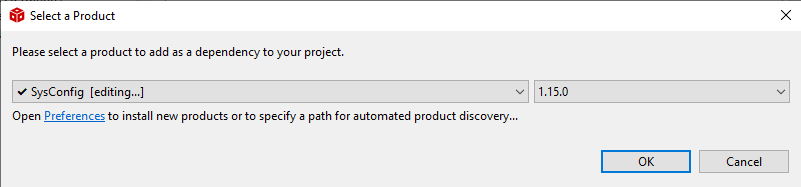
2.3. Verify that the SysConfig path is to the new standalone. A refresh may be needed in order to find it. If not check the paths and installation of SysConfig
Build the code example.
After a successful build, double-click the .syscfg file to start using SysConfig.
The best way to start a SysConfig project in IAR is to import it from the SDK; however, some steps are required to initialize SysConfig in IAR for the first time.
If the MSPM0_SDK variables are not shown, ensure this step is followed as described in MSPM0 SDK QuickStart Guide for IAR, as summarized below.
7.1. In IAR, click on Tools → Configure Custom Argument Variables
7.2. Click the Global tab, and then Import
7.3. Navigate to your SDK folder into <MSPM0_SDK_INSTALL_DIR>/tools/iar/ and open MSPM0_SDK.custom_argvars.
7.4. The SDK variables should now be installed in IAR. Click OK to close the window.
If the SYSCONFIG_ROOT variable is not pointing to the correct path of your SysConfig installation described in section Downloading and Installing MSPM0 SysConfig, edit the variable as shown below:
3.2.2 Importing MSPM0 SysConfig Project using IAR¶
Follow these steps to import and use a SysConfig project in IAR.
The best way to start a SysConfig project in Keil is to import it from the SDK; however, some steps are required to initialize SysConfig in Keil for the first time.
The following steps describe how to start a SysConfig project using MSPM0 without an IDE. The standalone version can be used for code generation and to evaluate the capabilities of the device, but is not capable of runnning an example.
Run the standalone version of SysConfig
SysConfig 1.20.x includes support for MSPM0 and supports M0 SDK:
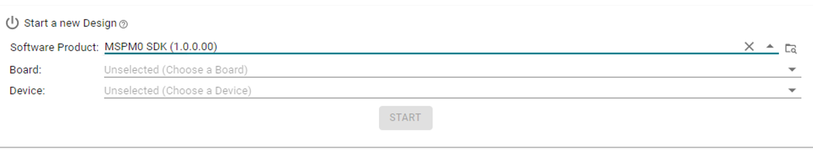
Select the MSPM0 SDK product, and the device.
3.1. Select a board which pre-selects the device and package.
SysConfig software modules for MSPM0 SDK are selected by clicking the icon shown below.
Software Modules are organized by functionality, including groups such as SYSTEM, COMMUNICATIONS and TIMERS, among others.
The “READ-ONLY” group contains modules which are not modifiable, but provide useful information such as “EVENT” which shows the configuration of all events used by the application.
Note: the modules might differ from below based on SDK version.
A software module’s description can be opened by selecting the module before adding it.
The description includes an overview of the module’s functionality and some useful information which can usually be found in the device’s datasheet or Technical Reference Manual.
The following shows the description of the TIMER module:
Software modules vary in functionality, but they typically include the following sections:
Name:
Custom name of the module instance.
The name starts with the number “0” as a suffix by default; however, the name can be customized by the developer to reflect the purpose of the module (e.g. “LED_ERROR” for a GPIO, or “TIMER_HEARTBEAT” for a TIMER).
Note that the actual peripheral selected by the module is shown below (e.g. “TIMA0”).
Quick Profiles:
Short list of some common configurations used for the module.
Besides providing a quick way to configure the module, these configurations can be used as a guideline to observe which parameters should be customized for each configuration.
Note that after modifying any parameter, the profile will default to “Custom”.
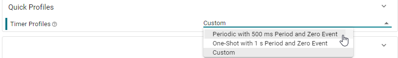
Basic Configuration:
Provides access to the most commonly used settings and features of a module.
This section is expanded by default.
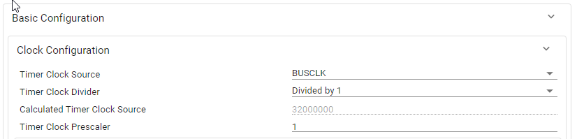
Advanced Configuration:
Provides access to less common but still useful module settings and features.
This section is collapsed by default.
Interrupts Configuration:
Selects which interrupts are enabled or disabled for the module.
This section is collapsed by default.
Event Configuration:
Configures the Publisher and Subscriber events for the module.
See section Event Configuration for more detailed information on how to configure Events in SysConfig.
This section is collapsed by default.
PinMux - Peripheral and Pin Configuration:
Configures the hardware peripheral and pins used by the module. See section PinMux Configuration for more details about hardware selection.
Other Dependencies:
Provides quick access to other dependencies used by the module.
The Clock Tree feature allows the user to configure the clocking of a device graphically rather than using SYSCTL menus. This feature is Clock Tree and can be found by clicking the signal icon near the top left corner of SysConfig. Note the highlighted icon at the top of this page that opens on MSPM0G3507.
Note: the modules and views may differ on SDK version.
To enable Clock Tree, simply add the SYSCTL module and click “Use Clock Tree” as shown below. This will source code generation and all functions from Clock Tree rather than from the SYSCTL module.
In SysConfig, there are different colors and shapes that represent the different states of the Clock Tree. There are three possible states and colors that different elements in the Clock Tree can be. They are:
Active (blue): The element is in use and has a non-zero signal at at least one input
Unused (light gray): The element is not in use by the current view, but does have a non-zero clock signal into at least one input (even if it’s not outputted)
Off (dark gray): The element does not have a non-zero clock signal at any input, regardless of if its usage.
The notion of “in-use” describes an element that is in the signal chain of one or more elements that do not have any outputs shown on the graph.
The below image shows the SYSPLL grouping with the channel SYSPLL0 getting output to MCLK. Thus, the path through to MCLK is active, however, other channels are light gray and unused.
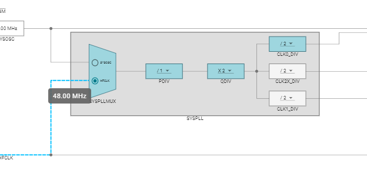
Here, the same SYSPLL is in use, but the HFCLK source is 0.
Since SYSOSC is non-zero, the mux is active (and technically on a used path), but the other elements have zero frequency inputs, and are thus off.
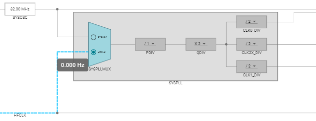
Additionally, M0 devices currently have two separate views in the Clock Tree. A basic view to configure the internal signals, and an external/FCC view where the signals can be sent out or to the Frequency Clock Counter (FCC). One can toggle between the views by clicking them in the top right pane as shown below.
Clock Tree components can be edited by clicking on them. There are several different types of components that live in Clock Tree. To get more information about a component, one can simply click on the component to see the available configurables. The major categories are as follows:
Divider/Multipliers: These are arithmetic components in the signal path. They can be adjusted by clicking on the dropdown and selecting the correct number.
Frequency Labels: These are generally labeled signals that can reflect the frequency on the line in order to easily ascertain what is the current state of the signal.
FCC: The frequency clock counter is represented by a single box, and can be enabled and configured by clicking on the box in the external view window.
Gates: These are smaller rectanular blocks that the signal passes through. Some gates are fixed, while others can be enabled/disabled by toggling the checkbox inside.
Muxes: These are adjustable by clicking the buttons inside the mux to select the source signal to be output.
Pin Functions: These are the smaller boxes with an “X” over them, and these all correspond to a resource in the pinmux. To enable them, click on the function and then click enable in the description. This will add the device to the pinmux data as well. There may additional configurables such as HFXT where an input frequency is required in order to know what the other frequencies will be.
Note: Just because CLKOUT appears enabled, this does not mean that code is being generated. It must be clicked on and enabled.
Oscillators: SYSOSC and LFOSC are also present on the device, and SYSOSC does have some configurables and options that can be checked by clicking on the oscillator.
Clock Tree also has a summary pane view that can be found on the far right of the screen when selected from the top right. This can be useful as a quick reference when developing.
The NONMAIN Configurator is a SysConfig module that helps the user configure the device boot routines. The configuration data used by the boot configuration routine (BCR) and bootstrap loader (BSL) are stored in a dedicated region of flash memory called NONMAIN, and the configuration data structures are protected by 32-bit CRCs to improve security. Refer to the Architecture chapter in the device TRM for more details.
Valid device configuration data and the corresponding valid CRC must be programmed into NONMAIN for the device to boot, otherwise the device will become locked in an unrecoverable state.
The NONMAIN Configurator helps the user safely configure the device boot routines by automatically calculating the CRCs based on the user-selected values. The NONMAIN Configurator can be added to a project by adding the NONMAIN module as shown below.
When the NONMAIN Configurator module has been added, SysConfig will generate two files: boot_config.h and boot_config.c.
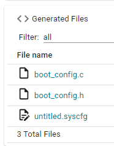
The boot_config.h file contains various enums, defines, and typedefs representing the configuration data structures and the selectable options.
The boot_config.c file contains the configuration data structures with the user-selected values.
When these files have been added to a project, and the project has been built and downloaded to the device, the updated boot routines will take effect after the next BOOTRST.
Note that the generated NONMAIN structures must be placed in the corresponding memory locations by using linker files. The MSPM0 SDK includes linker files showing this functionality for TI Arm-Clang, GCC, IAR, and Keil.
Refer to the SDK BSL examples (bsl_i2c_flash_interface, bsl_uart_flash_interface, secondary_bsl) and the Driverlib example flashctl_nonmain_memory_write for more details on using these files in a project.
Some configurations can trigger information messages, warnings or errors which are shown in the Problems panel.
The Problems panel can be enabled/disabled using the icon highlighted below.
Clicking on the hyperlink for each message will open the module and direct the user to the error.
This information message informs the developer that the DAC output will depend on the comparator output, and it assumes a reference supply of 3.3V.
The warning message informs that the calculated UART baudrate differs from the desired target value. This might be OK depending on the tolerance required by the application, so the warning could be suppressed.
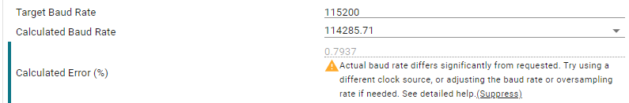
The error message informs that the selected timer period is not possible with the current configuration. This error must be fixed to generate code properly.
MSPM0 SysConfig includes a Project Configuration module that is intended to help provide the necessary project configuration files as well as facilitate device migration for projects. From this module the user will be able to select which files to generate, as well as which libraries their project should include.
SysConfig will generate Project Configuration files for CCS projects using TI Arm Clang and Arm GCC by default.
When using SysConfig through an IDE, the tool will automatically detect the compiler for the project and generate the appropiate files. When using standalone SysConfig, the user will be given the choice of generating all the files or filtering for a specific compiler.
In either case, file generation can be disabled through the Project Configuration Files module.
Project Configuration files are split into categories, which can be seen from the SysConfig Generated Files view.
Linker Command: File will be generated as SysConfig output based on the selected device. Linker file includes memory configurations, and is specific to each compiler.
Startup: The relevant startup file will be referenced from the SDK based on the selected device family. Startup file includes peripheral configuration options.
Compiler Options: This file will be generated as SysConfig output based on the selected device, it includes compiler build options.
Library Includes: This file will be generated as SysConfig output based on the selected device and library parameters, and is specific to each compiler. The libraries included in this file can be selected by the user through the Include Libraries group parameters, which include. The libraries included in this list are the statically generated libraries included in the SDK, in order to add any other libraries users can manually add their source to the project. Note: If the user wants to manually modify any Project Configuration files, they should disable the option to generate that file from the Project Configuration module and then manually add their desired file to the project.
The MSPM0 event manager transfers digital events from one entity (event publisher) to another (event subscriber).
SysConfig enables an intuitive and simple configuration of events in a graphical manner.
The following steps show how to configure an event.
Select a module with event publisher capabilities. This example uses a TIMER.
Go to the Event Configuration section of the publisher module.
Select an ID from 1-15 and the event that will be published.
The example below selected ID #2, and the Timer Zero event.
Select a module with event subscriber capability. This example uses an ADC.
Go to the Event Configuration section of the subscriber module.
Select the Subscriber Event Channel ID. Note that SysConfig will show which publishers are already configured.
For the example below, it shows TIMER for ID #2.
Open the READ-ONLY EVENT module to see all events.
Note that Channel #2 is configured to trigger from TIMER to ADC.
SysConfig also generates an Event.dot file which has a graphical representation of Events.
Copy the contents of the generated Events.dot into a .dot file viewer such as GraphvizOnline.
Observe that Channel #2 is configured to trigger from TIMER to ADC.
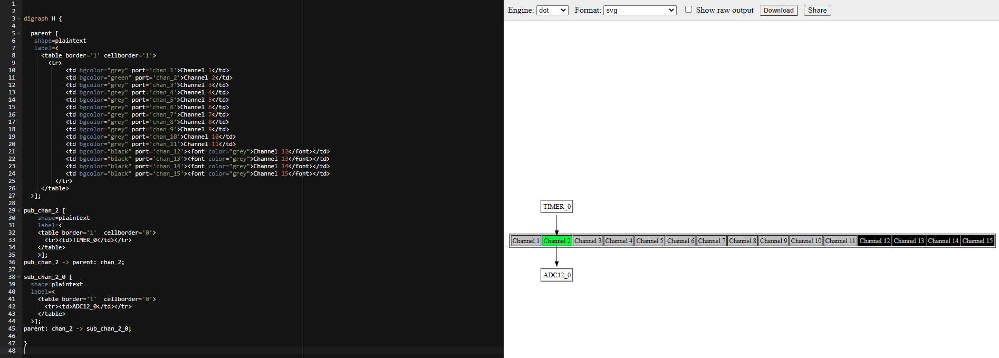
Some event channels support multiple 2 subscribers. The example below shows the configuration of a Timer Publisher triggering an event to the ADC and DAC12 as Subscribers.
SysConfig can allow developers to assign peripherals without necessarily using them as Software modules.
This feature can be useful to reserve pins and peripherals without having to generate code, or for hardware developers wanting to select pins which allow for easier routing.
Once the initial configuration for the application is complete, developers may wish to freeze or lock-in the files generated by SysConfig, so they are not re-generated in future builds.
Generated files can be located in the CCS Project Explorer in the Generated Source folder:
These files will be located in <project>/<build_configuration>/syscfg which can be accessed in a quick and easy way by right-clicking on any of the files in the folder above and selecting Show in Local Terminal → System Explorer
In CCS the build directory is cleaned every time the project is rebuilt, so it is necessary to copy the generated files to a permanent location before the project is rebuilt.
The files can be copied to the project root directory, or a new folder can be created.
The following steps and figure show the steps creating a new folder.
Create a new folder. In the figure below shown as <project>/sysconfig.
Copy the generated source files from the <project>/<build_configuration>/syscfg mentioned in previous step.
Paste the generated source files to the new folder.
In CCS, files ending in .syscfg are automatically flagged as SysConfig files. If you have an active .syscfg file in your workspace, it will invoke the SysConfig Tools.
To disable the file, right-click on it and select Exclude from Build.
The source files generated by SysConfig are used by the compiler and linker as part of the build process. Moving the files to a new location requires updating project settings.
Note that this step may not required if the generated files are copied to the project root folder.
The following image shows how to add the path ${PROJECT_ROOT}/sysconfig to include the header files from the newly created folder.
Generated files can be located in the IAR Workspace in the SysConfig Generated Files folder:
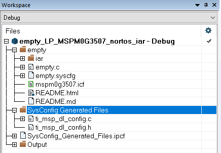
These files will be located in the project root folder. The files can be accessed in a quick and easy way by right-clicking on any of the files in the folder above and selecting Open Containing Folder
In IAR, SysConfig is treated as a Custom Build step. To access the custom build steps, select Project→Options→Custom Build. Remove all the fields that are populated under the Custom Tool Configuration tab as shown below:
In some scenarios, it might be useful to override some functions generated by SysConfig while still keeping it enabled for configuration and code generation of other functions.
This can be achieved in SysConfig for MSPM0-SDK since functions are declared as SYSCONFIG_WEAK.
The weak attribute causes the compiler to emit a weak symbol to the symbol table for the symbol’s declaration. At link-time, if a strong definition of a symbol with the same name is included in the link, then the strong definition of the symbol will override the weak definition.
The example below shows the weak definition of SYSCFG_DL_GPIO_init:
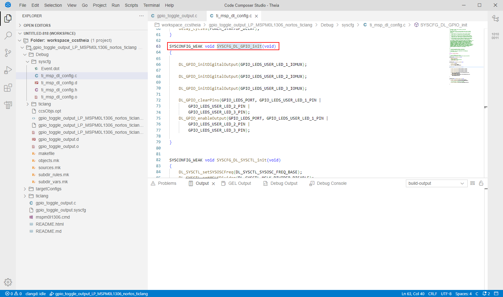
The same function can be rewriten in the application code without the SYSCONFIG_WEAK attribute and it will take precedence over the function generated by SysConfig.
Note how in the example below, SYSCFG_DL_GPIO_init is still called by SYSCFG_DL_Init during SysConfig initialization, but it resides in the application file instead of the file generated by SysConfig: